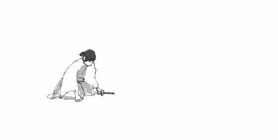
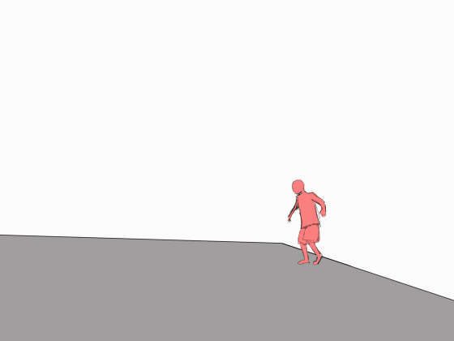

Animation!
While I really, really like Animation, love all the heart and soul that goes into making it, I myself am still learning how to animate. These are a few practices based on videos I've seen on the internet
Quickdraw
先日の撮影でのNGシーンをどうぞ！ pic.twitter.com/6Y8IYnk7Jw
— まーこ (@harima_mekkai) December 2, 2018
Tricking
沢山の人に反応いただけて本当に嬉しいです
— taka (@taka_VoLatricks) November 19, 2018
空手要素はどこ？という疑問を持つ方が多く見受けられたので「キック」にフォーカスをあてた動画をぶらさげておきます
このスポーツでは後ろ回し蹴りや前蹴り、オーバーヘッドキックなどがよく登場します
少しでも認知度を上げてくださると嬉しい限りです！ pic.twitter.com/gebL1qKJ9f
About Me

More About Me!
Follow Me